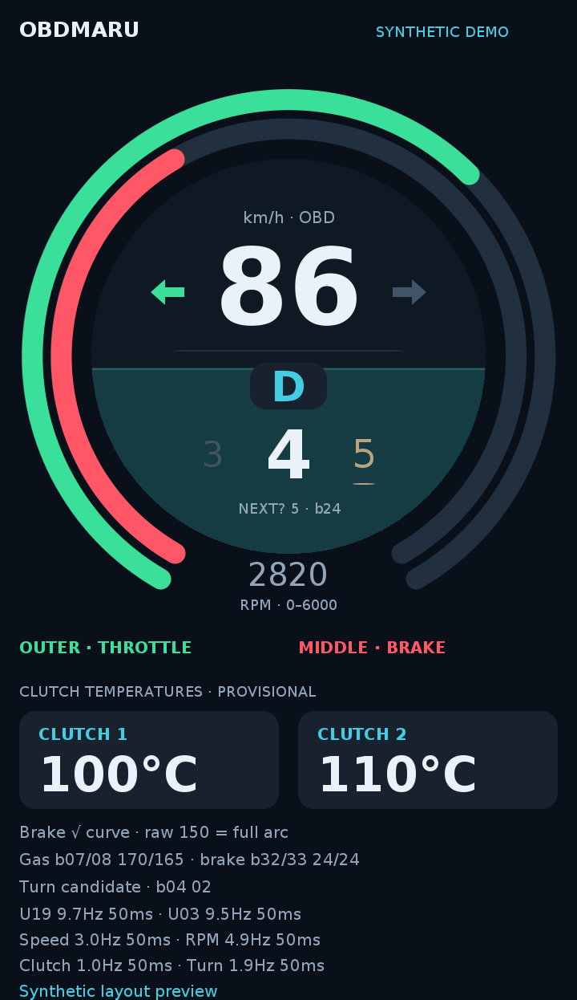
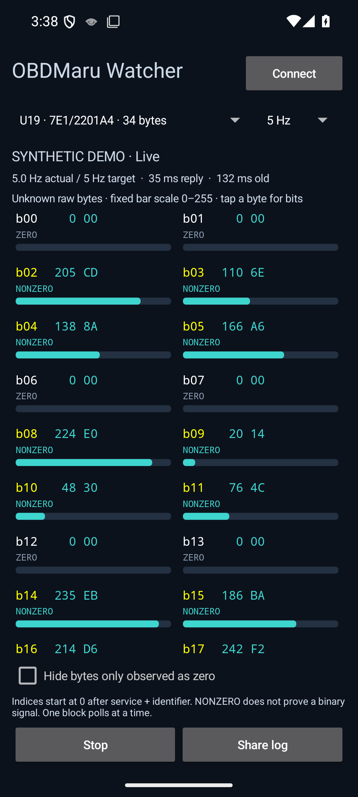

Magic App 2.0.2
Two capture modes, faster priority polling, and a continuous spoken validation route. Preserve raw requests, replies, failures, and timing for desktop analysis.
Download Android APK Release notes & checksumAndroid 12+ · v2.0.2 · experimental, debug-signed build. Install over the previous version to preserve local sessions. Export recordings before uninstalling.
Update all installed OBDMaru apps
Magic 2.0.2, Watcher 0.1.1 and Dash 0.1.3 share an exclusive OBD session guard. Only one can connect at a time; the blocked app names the active app. Stop that recording before switching. Older installed OBDMaru builds must be updated or uninstalled before a real capture can start. Demo mode is unaffected.
Stop unrelated third-party OBD apps manually; Android does not provide reliable access to their serial-connection ownership.
Magic · broad capture
Start once and take an ordinary drive. Priority requests for motion, pedals and transmission data run alongside standard discovery and a finite set of Hyundai read requests. Zero-only readings are revisited less often.
No driving script or voice prompts.
Guided · spoken sequence
Start while parked. Spoken instructions begin automatically after connection checks. The sequence covers parked brake patterns, progressive pedal inputs, cruise at 60/70 where appropriate, and adjacent manual shifts.
The guide finishes; recording keeps running until you park and stop it.
Dashboard · circular telemetry display
Version 0.1.9 keeps the thick throttle and brake arcs from 7 to 5 o'clock, without pedal percentage readouts, with RPM filling the whole inner circle upward behind speed and gear. The fill spans 0–6000 RPM with subdued teal color. A sliding gear sequence has a compact D/M letter badge, a larger current gear and a subtle provisional b24 highlight. Two provisional clutch temperatures and sampled indicator arrows remain visible. Polling targets remain 10 Hz pedal/gear, 3 Hz speed, 1 Hz temperature display, 5 Hz RPM and up to 2 Hz optional indicators; actual rates depend on adapter throughput. A separate app alongside Magic and Watcher, with synthetic demo and raw logs.
Download Dashboard APK Dashboard instructions and mappings
Synthetic layout preview rendered from the drawing code on the host; Android font metrics may differ.
Brake uses a square-root display curve: raw 150 = 100%, with more visual response at low inputs and compression at high inputs. Larger readings remain visible numerically. Pedal and clutch interpretations are provisional. Stop other OBD apps before connecting.
New: Watcher · live unknown bytes
A separate portrait app alongside Magic. Choose one of the 20 unknown blocks and watch every byte as a 0–255 bar, decimal/hex value and ZERO/NONZERO indicator. Target 5 or 10 Hz, with the actual sample rate and freshness visible. Includes synthetic demo, bit inspection and raw log export.
Download Watcher APK Watcher instructions
Polls one selected block at a time; adapter throughput determines actual Hz. Unknown bytes stay labeled by index. Stop other OBD apps before connecting.
Before the drive
- Download and install the APK on the S23+. Grant Nearby devices and notification permissions.
- Use Test spoken instructions. Check the phone/car audio volume and that an English TTS voice is installed. The app uses Android text-to-speech; voice quality depends on your installed engine.
- Optionally run Run demo capture (no car), then stop and export to check the file workflow. Demo data is synthetic. A guided desk demo waits for simulated motion after its parked section; it is not a real drive.
- While parked, connect the OBD adapter and pair it in Android Bluetooth settings. Refresh paired devices and select it.
- Choose Magic or Guided. For Guided, remain parked in P with parking brake on and engine idling, then tap Start selected vehicle capture and confirm the parked setup. Wait for spoken instructions.
How to follow the guided route
The sequence assumes a suitable road with a 90 km/h limit. Actual posted limits, traffic, visibility, and comfortable engine RPM always take priority. The 60/70 targets and every stronger input or gear request are optional. There is no sustained parked throttle test, emergency-stop requirement, or multi-gear downshift.
Drive continuously and follow only the actions that fit the road. You do not need to touch the phone. Prompts are timestamped as instructions, not proof that you performed the action. We can compare the actual telemetry afterward even when your timing differs.
Version 2.0.1 has 28 explicit stages and 17 minutes of observation windows, plus speaking and waiting time. Timers wait until each spoken instruction finishes. Departure includes holding the foot brake, selecting D, releasing/checking the parking brake, then releasing the foot brake only when clear. Cruise master, SET, brake cancel, RESUME, button cancel and master off have distinct windows. Return to D and final parking are explicit. Instructions and expected states are logged separately from raw control observations; cruise and parking-brake state remain unverified. Moving-stage timers pause at stops or when speed data is stale. A stronger-input window waits for a naturally lower pace and skips itself after 75 seconds if no suitable opportunity appears. Do not slow just to activate it. Passenger/parked controls can pause, repeat or skip instructions.
Full spoken sequence · 28 stages
- parked baseline25 seconds of eligible time after speechStart only while safely parked on level ground, engine idling, selector in P and parking brake applied. Keep the accelerator released. If the cruise indicator is on, switch the cruise master off; otherwise leave it off. Once the car is secure, release the foot brake and leave both pedals alone for this baseline.
- parked light brake25 seconds of eligible time after speechStay in P with the parking brake applied and cruise off. Keep the accelerator released. Press the foot brake lightly for two seconds, then release it fully. Repeat once, and finish with your foot off the brake.
- parked firm brake30 seconds of eligible time after speechRemain in P with the parking brake applied and cruise off. Leave the accelerator released. Press the foot brake firmly but comfortably for two seconds, then release. Make two light taps followed by one firmer press. Release the foot brake fully at the end.
- parked cruise on20 seconds of eligible time after speechStill parked in P, parking brake applied and accelerator and foot brake released, switch the cruise master on once if its indicator is off; if already on, leave it on. Do not press SET or RESUME. Observe whether the cruise indicator comes on. If the car will not enable it while parked, leave it alone; that is useful information too.
- parked cruise off20 seconds of eligible time after speechKeep P and the parking brake applied. Leave the accelerator and foot brake released. If the cruise indicator is on, switch the cruise master off once; if already off, leave it off. Do not change the selector yet.
- departure setup25 seconds of eligible time after speechPrepare to depart only when safe. Keep the accelerator released and cruise off. Press and hold the foot brake. With the car stationary, select D. Release the parking brake using the normal control, and check that its warning indicator goes out. Keep holding the foot brake until the road is clear and the next departure instruction.
- depart 6075 seconds of eligible time after speechBefore moving, confirm D, cruise off and parking brake fully released. If you missed the setup, remain stopped with the foot brake held and complete it first. When the road is clear, release the foot brake, then use light accelerator to depart smoothly toward sixty if suitable. Once moving, keep D and comfortable revs; do not force a gear or chase sixty.
- cruise ready20 seconds of eligible time after speechKeep D and the parking brake released. At a suitable steady legal pace near sixty, use the accelerator normally and keep your foot off the brake. If the cruise indicator is off, switch the cruise master on once; if already on, leave it on. Do not press SET or RESUME yet. This window is cruise on without engagement.
- cruise 6055 seconds of eligible time after speechWith D and cruise master on, if the road permits, settle near sixty using the accelerator. Press SET once at your actual speed. Once cruise is holding and the SET indicator is on, lift completely off the accelerator. Keep your foot off the brake. If it does not engage, continue normal driving rather than repeating button presses.
- cruise 7065 seconds of eligible time after speechOnly if cruise is already engaged, keep both pedals released and raise the set speed gradually toward seventy using the cruise increase button. Let it settle and leave cruise engaged. Follow any lower speed limit instead. If cruise is not engaged, skip the button changes and continue driving normally.
- brake cancel45 seconds of eligible time after speechLeave the cruise master on. At the next naturally needed slowdown, first keep the accelerator released, then brake gently to cancel cruise. Check the SET indicator goes out. Release the foot brake after the slowdown, then use the accelerator normally as needed. Do not press RESUME, SET or the cruise master button in this window.
- soft gas40 seconds of eligible time after speechContinue in D with the parking brake released. If SET is still lit, press CANCEL once before this test. Leave the cruise master on, but do not SET or RESUME. With the foot brake released, apply light accelerator for a gentle acceleration, then release the accelerator and coast when appropriate. Resume ordinary pedal control afterward.
- progressive gas40 seconds of eligible time after speechKeep D, cruise not engaged, and the foot brake released. Smoothly increase accelerator from light to moderate for a few seconds, then ease back and release it fully to coast when appropriate. Return to ordinary pedal control. Leave the cruise buttons and selector alone.
- brief full gas40 seconds of eligible time after speechOptional stronger input. Keep D and cruise not engaged, with the foot brake released. Only with clear road and ample speed headroom, smoothly press the accelerator fully for about one second, ease back toward moderate, then release it fully. Skip the action if unsuitable. Return to ordinary pedal control; do not sustain full throttle or chase a speed.
- light brake35 seconds of eligible time after speechKeep D and cruise not engaged. First release the accelerator and coast. At a naturally needed slowdown, apply the foot brake lightly, then release it fully. Use the accelerator again only after the brake is released and when needed. Do not create an unnecessary stop.
- alternate gas45 seconds of eligible time after speechKeep D, cruise not engaged and the foot brake released. When appropriate, build accelerator smoothly from light to moderate, ease back to light, then release it fully to coast. A brief firmer input is optional. Return to normal pedal control. Do not overlap brake and accelerator or change cruise settings.
- firmer brake40 seconds of eligible time after speechKeep D and cruise not engaged. Release the accelerator first and coast. At a naturally needed slowdown, optionally brake more firmly than before, then release the foot brake fully. Return to normal accelerator control afterward. No emergency stop or immediate full acceleration is requested.
- cruise resume45 seconds of eligible time after speechOptional resume check in D. Keep the cruise master on and the foot brake released. Only if the remembered set speed is known and suitable for the road, press RESUME once, then lift off the accelerator as cruise takes over. Let it settle and leave it engaged for the next prompt. Otherwise skip RESUME and drive normally.
- cruise button cancel20 seconds of eligible time after speechKeep D and leave the cruise master on. Press the cruise CANCEL button once. Check SET goes out. Do not touch the brake just for this cancellation. After cruise releases, use the accelerator normally to maintain a suitable speed. Do not press SET or RESUME again.
- cruise master off20 seconds of eligible time after speechContinue normal driving in D using the accelerator as needed, with the foot brake released except for normal traffic needs. If the cruise indicator is on, switch the cruise master off and check it goes out; if already off, leave it off. Leave cruise off for all remaining gear tests.
- manual prepare75 seconds of eligible time after speechKeep D, parking brake released and cruise off. Settle at a steady legal pace, up to around ninety only if appropriate, leaving speed-limit margin. Let D choose seventh naturally. Do not accelerate just to reach seventh. Control speed with the accelerator and use the brake only for ordinary traffic needs.
- manual seventh30 seconds of eligible time after speechOnly if steady in seventh with comfortable revs, move the selector from D to manual mode without requesting a shift, and hold seventh. Keep cruise off and maintain speed with the accelerator. If seventh is unsuitable or unavailable, stay in D and ignore the following gear requests until told to return to D.
- manual sixth25 seconds of eligible time after speechOnly if you completed manual mode in seventh, request one adjacent downshift to sixth when speed and revs allow. Let it settle and maintain a comfortable legal pace with the accelerator. Keep cruise off. If not in that starting state, skip this request and continue normally.
- manual fifth25 seconds of eligible time after speechOnly if settled in manual sixth and revs allow, request one adjacent downshift to fifth. Let it settle and maintain a comfortable legal pace. Keep cruise off; do not force a refused shift. If the previous request was skipped or unsuitable, skip this one too.
- manual back sixth25 seconds of eligible time after speechIf settled in manual fifth, request one adjacent upshift to sixth and let it settle. Keep cruise off and maintain a suitable speed with the accelerator. If not in fifth, skip this requested shift and drive normally rather than forcing the sequence.
- manual back seventh25 seconds of eligible time after speechIf settled in manual sixth and the pace suits seventh, request one adjacent upshift to seventh and let it settle. Keep cruise off. If unsuitable, keep your current appropriate gear. Stay in your current selector mode until the next return-to-D prompt.
- return to d25 seconds of eligible time after speechFinish the manual section now. If in manual mode, move the selector back to normal D. If already in D, leave it there. Keep cruise master off and parking brake released. Use normal accelerator and brake control as traffic requires; no further gear requests are planned.
- normal finish60 seconds of eligible time after speechContinue normal driving in D with cruise off and parking brake released. The guide will finish shortly, but recording continues. Do not pull over just to match the timer. At the end you will hear the full parking procedure; drive until a suitable safe parking place is available.
Completion and parking: The guided sequence is complete. Recording continues. Keep normal D and cruise off until you reach a safe parking place. When ready, release the accelerator, brake normally to a complete stop, and keep the foot brake held. While stationary, select P, apply the parking brake and check that the car is secure. Only then release the foot brake. Leave the accelerator alone. Stop and save the recording while parked; no engine shutdown is required for this test.
After each capture
- Keep driving normally after the final instruction, until you can pull over and park.
- Tap Stop and save. Use Save a session to Files or Share a saved session.
- Send the
.jsonlfile privately in the project chat. Ideally send one ordinary Magic capture and one Guided capture; they may be separate drives.
What changed
- 15 ms serial turnaround instead of the previous fixed 100 ms pause.
- Priority scheduling, fewer redundant addressing commands, finite discovery, and measured per-request cadence in the log. Desired rates are not guarantees.
- Raw-byte logging remains intact. Buffered writes sync roughly every half-second; markers and a normal stop sync immediately. A sudden kill may lose the recent unsynced tail.
- Guided instructions, actual speech callbacks, pauses, skips, and completion are logged separately. Capture continues after guide completion.
Build, protocol/scheduler/guide tests, desktop tools, and Android emulator capture tests are checked. Physical-adapter throughput and audible TTS routing on your S23+ still need verification. A diagnostic reply does not validate its sensor interpretation.